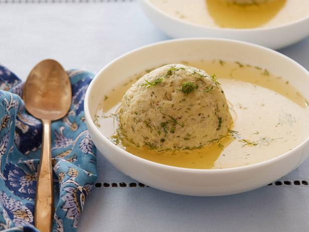
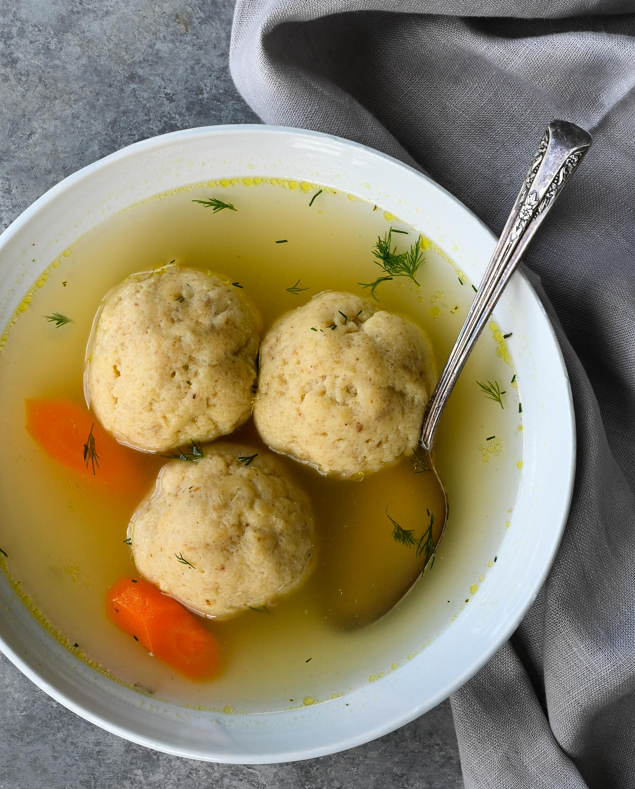
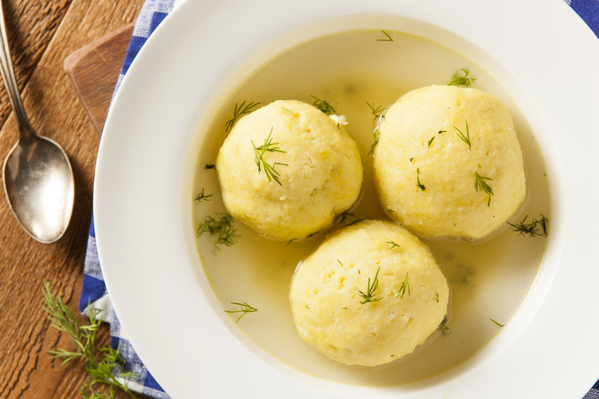
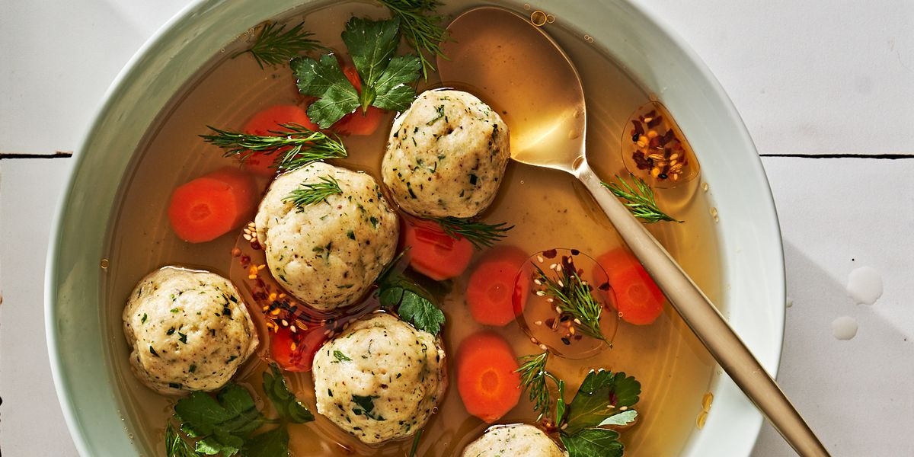

Welcome to the Matzo Ball Mania page, where we unleash a whirlwind of matzo madness that will make your
taste
buds dance the hora! At Kosher Kravings, our Matzo Ball Mania dish takes this cherished classic to a whole
new
level, leaving you matzo-nished and matzo-amazed.
Description:
Prepare yourself for a flavor-packed adventure! Our Matzo Ball Mania starts with a soul-warming broth that
has
simmered with love and bubbe-approved spices. We take pride in our matzo balls, those fluffy little wonders
that
bob gracefully in the sea of deliciousness. Each matzo ball is a pillowy masterpiece, blending matzo meal,
eggs,
and a sprinkle of our secret seasoning that's been handed down through generations (sorry, we can't spill
the
beans on that one!).
As you take your first bite, you'll experience a matzo ball extravaganza like no other. These cloud-like
creations gently melt in your mouth, releasing their comforting embrace with every matzo-mazing spoonful.
It's
like having a Jewish grandma's hug in edible form!
Customization Options:
Ready to embark on a matzo ball adventure tailored just for you? Customize your Matzo Ball Mania experience
with
these options:
Matzo Ball Size: Choose between our traditional matzo balls or go for the matzo mini-madness if you're in
the
mood for bite-sized delight. Mini matzo balls are perfect for those who like to pop them like matzo popcorn!
Soup Consistency:
Want a soup that's thin like a runway model or thick and cozy like a warm blanket on a
winter's day? Just let our meshuggeneh staff know your preference, and they'll get the consistency just
right.
Garnish: We believe matzo balls deserve a touch of fancy flair. Sprinkle your Matzo Ball Mania with fresh
herbs
to give it a pop of color and an extra dose of aromatic goodness. It's like putting a bow tie on your matzo
ball!
Whether you're chasing away the winter chill or simply craving some bubbe-approved comfort, our Matzo
Ball Mania is here
to save the day. So, grab a spoon, put on your matzo-ballin' shoes, and join us at Kosher Kravings for
matzo-tastically
delicious experience. Remember, it's matzo ball or nothing at all!